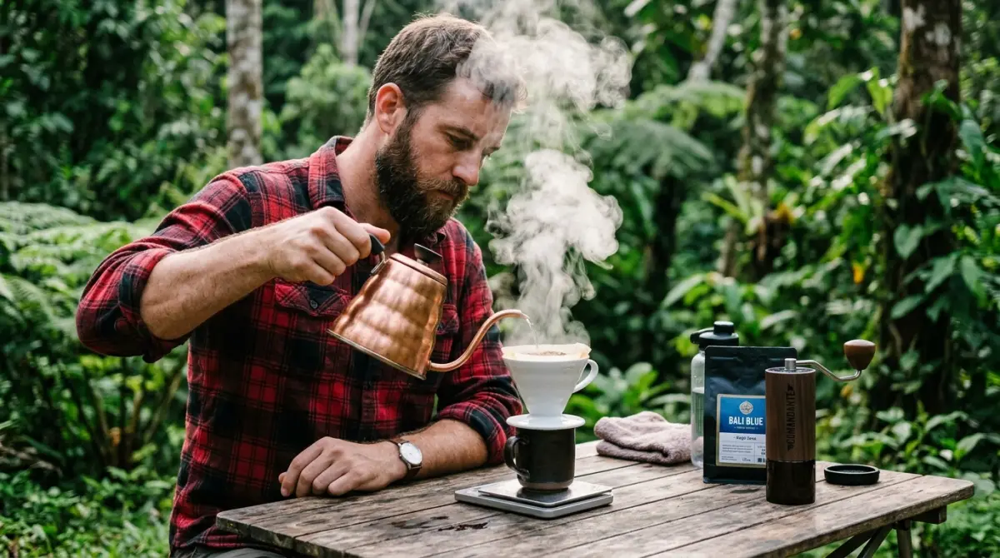

Pencahayaan hangat adalah kunci utama mengubah tenda biasa menjadi ruang glamping yang nyaman dan estetik.
Pencahayaan hangat adalah kunci utama mengubah tenda biasa menjadi ruang glamping yang nyaman dan estetik.
- Mengapa Estetika Penting dalam Membangun Suasana Camping?
- 5 Langkah Mengubah Tenda Biasa Menjadi Glamping Pribadi
- Langkah 1: Tata Cahaya Syahdu dengan String Lights dan Lentera
- Langkah 2: Set Ngopi Manual Brew untuk Pagi yang Sempurna
- Langkah 3: Area Komunal Hangat dengan Kursi Lipat dan Meja Kayu
- Langkah 4: Detail Interior — Karpet Bohemian dan Bantal Empuk
- Langkah 5: Keajaiban Api Unggun untuk Senja yang Memikat
- Kesimpulan
Coba ingat-ingat, kapan terakhir kali kamu benar-benar menikmati akhir pekan tanpa bayang-bayang grup WhatsApp kantor yang tiba-tiba berbunyi? Kita sering kali terjebak dalam siklus "kerja-pulang-tidur", menunda rencana liburan dengan alasan menunggu momen yang tepat atau bonus cair untuk menyewa vila mahal.
Padahal, waktu terus berjalan dan energi masa muda kita ada batasnya. Bayangkan jika lima atau sepuluh tahun dari sekarang, memori yang mendominasi kepalamu hanyalah tumpukan revisi dari atasan dan dinginnya AC ruang meeting. Jangan biarkan masa produktifmu berlalu tanpa cerita seru di bawah langit malam. Kamu tidak perlu menghabiskan jutaan rupiah untuk menyewa tempat mewah demi mendapatkan ketenangan.
Dengan sedikit sentuhan kreativitas, kamu bisa meracik sendiri suasana camping yang aesthetic layaknya resor berbintang. Ini saatnya mengambil kendali atas waktu istirahatmu dan menciptakan momen yang benar-benar layak dikenang, sebelum kamu menyesal karena menghabiskan terlalu banyak akhir pekan hanya dengan menatap langit-langit kamar.
Mengapa Estetika Penting dalam Membangun Suasana Camping?
Mungkin ada temanmu yang nyeletuk, "Namanya juga ke hutan, ngapain repot-repot mikirin estetik?" Pemikiran seperti ini sah-sah saja bagi pendaki gunung hardcore. Namun, bagi kita para pekerja urban yang mencari pelarian dari burnout, kenyamanan visual adalah kunci relaksasi.
Menata tenda itu prinsipnya mirip dengan menata meja kerjamu di kantor. Kalau mejamu berantakan, penuh kertas sisa dan kabel charger yang melilit, otomatis mood kerjamu akan anjlok. Sebaliknya, meja yang rapi dengan sedikit sentuhan tanaman hias kecil bisa menaikkan produktivitas. Hal yang sama berlaku di alam.
Menciptakan suasana camping yang rapi, hangat, dan terkonsep bukan sekadar untuk pamer di Instagram, melainkan bentuk apresiasi terhadap diri sendiri. Ini adalah reward karena kamu berhasil melewati hari-hari yang melelahkan. Transisi dari tenda yang sekadar "tempat numpang tidur" menjadi "ruang tamu di alam liar" tidak membutuhkan keahlian desain interior tingkat dewa. Kamu hanya butuh ketelitian dalam memilih perlengkapan yang mengawinkan fungsi pokok dengan desain visual yang ciamik.
5 Langkah Mengubah Tenda Biasa Menjadi Glamping Pribadi
Mari kita bedah satu per satu investasi barang dan trik tata letak yang akan mengubah wajah perkemahanmu 180 derajat. Anggap saja ini seperti menyusun strategi kampanye marketing; butuh taktik yang tepat sasaran agar hasilnya maksimal.
Tata Cahaya Syahdu dengan String Lights dan Lentera
Cahaya adalah nyawa dari setiap desain ruang, tak terkecuali di alam bebas. Mengandalkan satu senter kepala (headlamp) yang disorot ke atap tenda hanya akan membuat tendamu terlihat seperti ruang interogasi polisi. Kunci dari suasana camping bergaya glamping adalah pencahayaan yang hangat (warm white) dan tersebar.
Mulailah dengan menggunakan string lights atau lampu gantung LED panjang. Lilitkan lampu ini di sepanjang tali pancang tenda (guylines) atau di kanopi flysheet bagian depan. Pastikan kamu memilih lampu yang memiliki rating IP65 agar aman jika tiba-tiba turun hujan dan embun malam. Selain lampu gantung, letakkan satu atau dua lentera bergaya vintage (bisa yang berbahan bakar gas kaleng atau lampu LED rechargeable berdesain klasik) di atas meja. Cahaya kekuningan yang temaram ini akan langsung membunuh kesan menyeramkan dari gelapnya malam.
Set Ngopi Manual Brew untuk Pagi yang Sempurna
Membayangkan udara pagi yang sejuk dan kabut tipis—seperti nuansa di dataran tinggi kawasan Batu atau Malang—menyeruput kopi adalah sebuah ritual penenang jiwa. Membawa kopi saset memang praktis, tapi menyeduh kopi secara manual (manual brew) di depan tenda akan mengangkat derajat camping kamu ke level yang berbeda.
Siapkan grinder manual, biji kopi favoritmu, ketel leher angsa ukuran mini, dan dripper V60 atau Aeropress. Suara biji kopi yang digiling, aroma kopi yang menguar saat air panas dituangkan, hingga uap yang mengepul berpadu dengan udara dingin pegunungan adalah pengalaman sensorik yang tak ternilai. Secara visual, perlengkapan manual brew yang berbahan logam, kayu, atau keramik ini juga sangat fotogenik ketika ditata berdampingan di atas meja kemahmu.
Area Komunal Hangat dengan Kursi Lipat dan Meja Kayu
Kesalahan umum pemula adalah hanya membawa tikar tipis untuk duduk. Duduk meleseh berjam-jam bisa membuat punggungmu pegal, apalagi kalau tanahnya tidak rata. Agar suasana camping terasa lebih homey, investasikan budget-mu pada kursi lipat (camping chair) bergaya "Kermit" atau kursi lipat kanvas dengan rangka kayu/alumunium motif kayu.
Pasangkan kursi-kursi ini dengan meja lipat egg roll berbahan kayu padat (seperti kayu beech atau teak). Kayu selalu berhasil memberikan kesan natural yang menyatu dengan alam, jauh lebih estetik dibandingkan meja plastik lipat biasa. Di atas meja inilah nantinya pusat kehidupan kemahmu terjadi: tempat makan, tempat menyeduh kopi, hingga sekadar meletakkan buku bacaan. Susun kursi mengelilingi meja, menghadap ke arah pemandangan terbaik, layaknya kamu menata ruang direksi, tapi kali ini view-nya jauh lebih menyejukkan.

Suasana camping yang tertata baik menciptakan pengalaman healing yang jauh lebih bermakna dibanding sekadar tidur di tenda.Detail Interior: Karpet Bohemian dan Bantal Empuk
Bagian dalam tenda sering kali dilupakan karena dianggap tidak akan difoto. Padahal, kualitas istirahatmu ditentukan di sini. Ubah lantai tenda yang dingin menjadi area yang mengundang untuk direbahi.
Setelah meletakkan matras utama, lapisi bagian atasnya dengan karpet tenun bergaya bohemian atau selimut piknik bermotif tribal khas Navajo. Sentuhan corak etnik ini sangat identik dengan gaya glamping kekinian. Jangan pelit membawa kenyamanan dari rumah; bawalah bantal tidur sungguhan alih-alih menggunakan lipatan jaket kotor untuk menyangga kepalamu. Kamu juga bisa menambahkan selimut rajut yang diletakkan sembarangan namun artsy di ujung kasur tidurmu. Sentuhan-sentuhan fabric (kain) ini tidak hanya menjaga suhu tetap hangat, tetapi juga meredam suara dan membuat tenda terasa seperti kamar tidur pribadi yang aman.
Keajaiban Api Unggun untuk Senja yang Memikat
Tidak ada yang bisa mengalahkan pesona api unggun untuk menyatukan orang-orang. Api unggun adalah televisi alami di alam liar. Namun, ingatlah bahwa membuat api tidak boleh sembarangan. Daripada membuat lubang di tanah yang bisa merusak rumput dan meninggalkan jejak buruk, gunakanlah fire pit portabel atau tungku lipat berbahan stainless steel.
Selain menjaga asas Leave No Trace (tidak meninggalkan jejak kerusakan), fire pit membuat kobaran api lebih terkontrol dan estetik. Susunlah kayu bakar dengan rapi di sebelahnya. Saat matahari mulai terbenam dan string lights mulai menyala, nyalakan api unggunmu. Panasnya api, suara gemeretak kayu, dan bayangan yang menari di dinding tenda akan merajut suasana camping menjadi sebuah memori yang hangat dan syahdu.
"Tenda yang cantik dan foto yang aesthetic hanyalah bonus. Hadiah sesungguhnya adalah kedamaian batin yang kamu dapatkan saat duduk di kursi lipatmu, menatap bintang."
— Filosofi Glamping IndonesiaKesimpulan: Bawa Pulang Kenangan, Bukan Sekadar Foto
Mengumpulkan barang-barang estetik dan menyusun tata letak camping memang membutuhkan sedikit dedikasi di awal. Mungkin terasa repot mengatur lampu atau menggiling kopi dengan tangan, tetapi semua proses itu adalah bagian dari healing itu sendiri. Kamu sedang melatih dirimu untuk kembali fokus pada hal-hal kecil yang bermakna, sesuatu yang sering luput karena kita terlalu sibuk mengejar target pekerjaan.
Pada akhirnya, hidup bukanlah kompetisi tentang siapa yang paling sibuk, melainkan tentang siapa yang memiliki paling banyak momen untuk diceritakan di hari tua. Jangan tunggu sampai stresmu memuncak. Cek kalendermu, kosongkan satu akhir pekan ini, dan mulailah merancang pelarian manismu ke alam terbuka.
FAQ — Camping Aesthetic & Glamping DIY